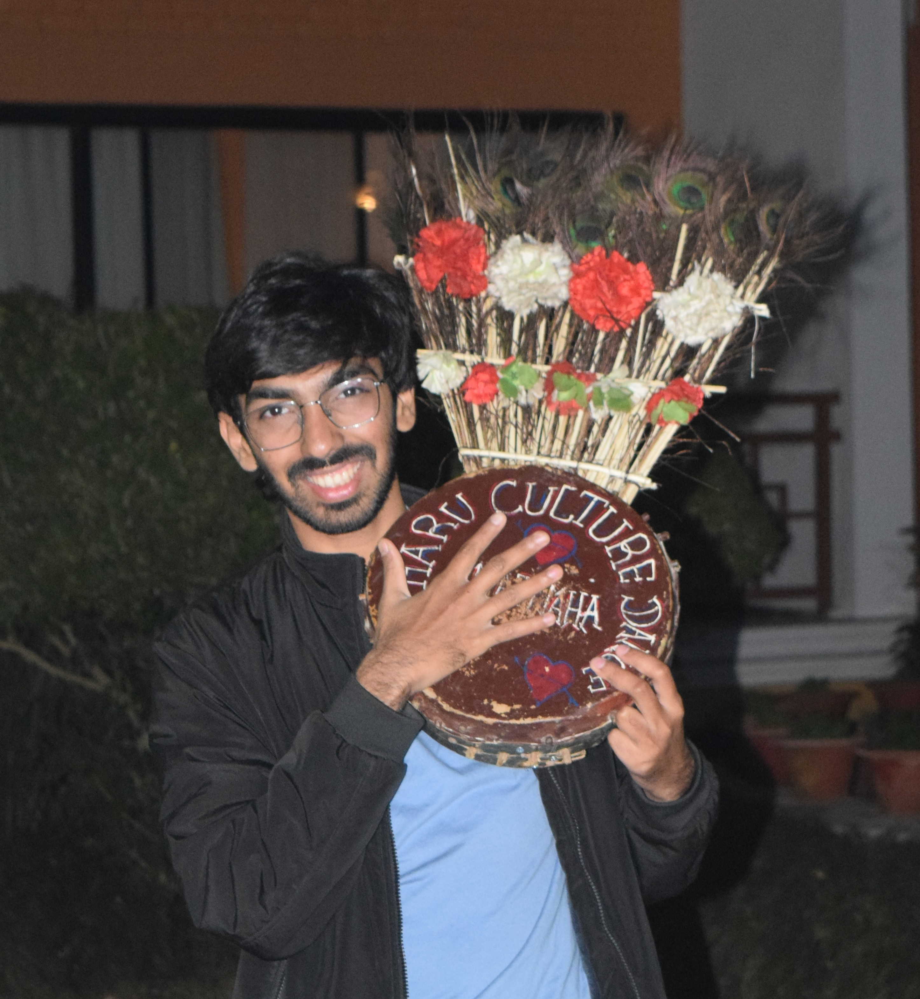

I am mrunalnshah.
I read, code, listen, eat, and lose hours playing games. I'm the kind of person who gets obsessed with ideas, projects, late-night conversations, and anything that feels alive — anything with a little BANG! (qu)Bit, Atoms, Neurons, Genes Treks, cold winds, long roads, and snowy mountains are my system reboot. I'm spiritual but in my own way, and just a normal fedora user. Let's talk about "you"! but before that, let me finish myself.
upcoming graduate student of Artificial Intelligence at Northeastern University with focus on Machine Learning, Reinforcement Learning and Natural Language Processing. Recently completed my internship as AI/ML Engineer Intern at Silver Touch Technologies working on user-compliance and violation detection AI models.
[03 - 05 - 2026] Completed my internship as AI/ML Engineer Intern at Silver Touch.